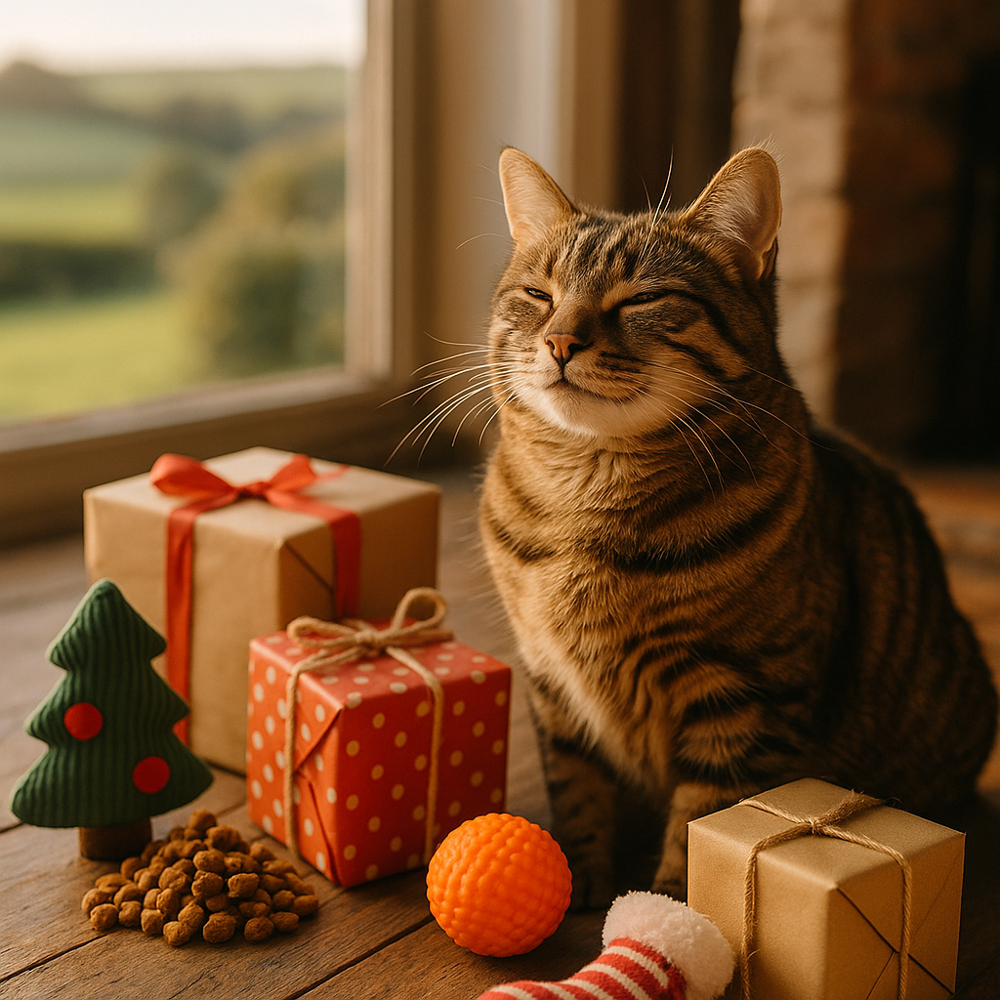

Best Christmas gifts for cats UK 2026 - Tech, toys and treats
Contents
- What are the best interactive and tech gifts for cats in 2026?
- What cosy beds and hideaways make the best cat Christmas gifts?
- Are treat dispensers and puzzle feeders good Christmas gifts for cats?
- What cat climbing and enrichment furniture is worth buying as a gift?
- Do GPS trackers and wearable tech make good Christmas gifts for cats?
- What are the best DIY and budget-friendly cat gift alternatives?
- What are the best cat Christmas gifts by personality type?
- Where can you buy cat Christmas gifts in the UK?
- What safety considerations should you bear in mind when choosing cat gifts?
- How should you wrap and present Christmas gifts for cats?
- Frequently Asked Questions
This article contains affiliate links. We may earn a small commission if you make a purchase, at no extra cost to you.
The best Christmas gifts for cats in the UK in 2026 include interactive laser toys, heated hideaway beds, GPS trackers, and puzzle feeders that keep even the most demanding feline genuinely entertained. If you want the short answer: an automatic laser toy (around £15 to £40) or a self-warming cave bed (£25 to £60) will delight most cats and won't gather dust by Boxing Day. Read on for our full breakdown by category, personality type, and budget.
Finding a gift your cat will actually use is the real challenge. Olive the Tabby Cat, Loyal & Loved's resident critic, has knocked many a well-intentioned toy off the shelf with supreme indifference. But get it right and you'll have a genuinely enriched, happier pet, which is the whole point. According to the PDSA's 2025 Animal Wellbeing Report, cats with access to regular mental stimulation show lower stress indicators than those without, so a thoughtful gift is genuinely good for their health.
Whether you're shopping for a bouncy young kitten, a senior sofa-dweller, or a nervous rescue cat, this guide covers the best cat Christmas gifts available in the UK right now, with real prices, honest pros and cons, and links to where you can buy them.
What are the best interactive and tech gifts for cats in 2026?
Interactive and tech gifts for cats are electronic or app-connected toys that simulate prey movement, encouraging a cat's natural hunting instincts without any effort from you. They're among the most popular cat gift categories in 2026, and for good reason: they keep cats active even when you're not home.
Automatic Laser Toys
Automatic laser toys rotate a low-powered laser beam across the floor and walls in unpredictable patterns, triggering a cat's chase instinct. The SureFeed Laser Pet Toy and similar devices from popular brands on Amazon typically cost between £15 and £40. According to the Veterinary Medicines Directorate's guidance on pet product safety (updated 2024), laser pointers and automatic laser toys should always use Class 1 or Class 2 lasers rated below 1mW to avoid eye damage. Always check the specification before buying.
- Pros: Hands-free, works while you're in another room, stimulates natural chase behaviour
- Cons: Can cause frustration if the cat never "catches" prey; always end a session with a physical toy
- Price range: £15 to £40
Browse automatic laser toys on Amazon UK
App-Controlled and Robot Toys
App-controlled cat toys, such as the Cheerble Wicked Ball and the Petronics Mousr, connect to your smartphone and let you steer an electronic "mouse" or ball remotely. Prices range from £25 to £80. The Mousr in particular uses algorithmic movement patterns designed in consultation with animal behaviourists to mimic genuine prey. As Loyal & Loved explains, the unpredictability of movement is the key feature that keeps cats engaged; a toy that moves in a simple, predictable loop quickly bores most cats.
- Pros: Genuinely unpredictable movement, can be used remotely if you work from home
- Cons: Battery life can be short (1 to 2 hours of active play); higher price point
- Price range: £25 to £80
See app-controlled cat toys on Amazon UK
Feather Wand Automatics
Automatic feather wands, like the well-regarded HEXBUG Cat Toy Nano Robotic Cat Toy or the Potaroma Spinning Feather, spin dangling feathers at variable speeds on a timer. Most run for 5 to 10 minutes before automatically switching off to prevent overstimulation. Expect to pay £12 to £35.
What cosy beds and hideaways make the best cat Christmas gifts?
Cosy beds and hideaways are among the most reliably used cat gifts because they meet a genuine feline need: cats sleep between 12 and 16 hours a day on average, according to International Cat Care, and they prefer enclosed, elevated, or thermally comfortable spaces. Get the right bed and it will be used every single day.
Self-Warming and Heated Cat Beds
Self-warming beds use reflective thermal layers to bounce a cat's own body heat back, requiring no electricity. Heated beds include a low-wattage element (typically 6 to 15W). The Omlet Heated Cat Bed and the K&H Pet Products Thermo Kitty Bed are two well-reviewed options. Loyal & Loved found that self-warming beds suit most cats, but elderly cats or those with arthritis particularly benefit from gentle electric heat, which can help ease stiff joints.
- Self-warming beds: £20 to £45, no running costs
- Electric heated beds: £35 to £70, very low running costs (pennies per day at typical UK energy rates)
Browse heated cat beds at Omlet or see options on Amazon UK.
Cat Caves and Hideaway Pods
Felted wool caves, such as those from Danish Design or similar artisan brands on Amazon, give cats the enclosed security they instinctively seek. A 2023 study published in Applied Animal Behaviour Science found that providing hiding spaces significantly reduced stress indicators in domestic cats, particularly in multi-pet households. Prices run from £25 to £65 for well-made wool versions.
Window Perches and Suction-Cup Seats
Window perches attach to glass via heavy-duty suction cups, giving indoor cats access to what behaviourists call "cat TV": birds, weather, and street life. Gifts for indoor cats that provide environmental enrichment like this are especially valuable. The Oster Sunny Seat and similar products cost £18 to £45 and typically support up to 10kg.
- Pros: Very low cost, huge enrichment value for indoor cats
- Cons: Suction can fail on older or textured glass; always check the weight limit
Are treat dispensers and puzzle feeders good Christmas gifts for cats?
Treat dispensers and puzzle feeders are excellent Christmas gifts for cats because they provide mental stimulation alongside food reward, slowing eating and reducing boredom. According to the Royal Veterinary College's 2024 guidance on feline obesity prevention, puzzle feeding can help maintain a healthy weight in cats prone to overeating.
Puzzle Feeders and Lick Mats
Puzzle feeders range from simple "roll the ball" designs at around £8 to complex multi-stage boards costing £20 to £35. The Trixie Activity Fun Board and the LickiMat Casper are popular UK choices. Lick mats, which you spread with soft food, wet food, or a scrape of treat-based gifts like meat paste, calm cats through repetitive licking, which releases endorphins. Lick mats cost £6 to £15.
Find puzzle feeders and lick mats on Amazon UK
For premium treats to fill them, AATU cat treats and Meowing Heads treats are grain-free, high-meat options that cats tend to work harder for.
Automatic Treat Dispensers
Timed treat dispensers drop a small amount of food or treats at set intervals throughout the day, useful for cats left alone for long periods. As Loyal & Loved explains, these work best as enrichment tools rather than meal-replacement devices; always consult your vet before using one to manage a cat's full diet. Prices range from £20 to £55.
What cat climbing and enrichment furniture is worth buying as a gift?
Cat climbing and enrichment furniture, commonly called cat trees or cat activity centres, gives cats vertical territory, which is a core need for the species. International Cat Care notes that access to height reduces conflict in multi-cat households and lowers overall stress. A good cat tree is genuinely one of the best investments you can make for a cat's wellbeing.
Cat Trees and Towers
Cat trees range from basic two-platform designs at £30 to elaborate floor-to-ceiling towers at £150 to £300. The Omlet Maya Cat Tree is a premium, design-led option that looks good in a modern home. Budget-conscious buyers will find solid options from brands like Feandrea (available on Amazon) in the £35 to £70 range, which consistently receive strong reviews for stability and material quality.
- Budget (under £60): Feandrea, Yaheetech
- Mid-range (£60 to £120): Trixie, Zooplus own brand
- Premium (£120+): Omlet, The Cat Collective, artisan bespoke pieces
See the Omlet Maya Cat Tree or compare cat trees on Amazon UK.
Wall-Mounted Cat Shelves
Wall-mounted cat shelves create climbing routes and vertical territory without taking up floor space. They suit flats and smaller homes particularly well. Sets from brands like Catastrophic Creations or IKEA LACK hacks (a popular DIY adaptation) cost £40 to £150 depending on complexity. Professional fitting is recommended for heavier cats.
Do GPS trackers and wearable tech make good Christmas gifts for cats?
GPS trackers for cats are small, lightweight devices that attach to a collar and send real-time location data to your smartphone, making them genuinely useful gifts for owners of adventurous or free-roaming cats. Our detailed guide to cat GPS trackers covers this topic in full, but here's a quick overview of the best options for 2026.
Top Cat GPS Trackers Available in the UK in 2026
| Device | Weight | Subscription | Approx. Price | Best For |
|---|---|---|---|---|
| Tractive GPS CAT 4 | 35g | £4 to £8/month | £49 device | Most cats, outdoor roamers |
| Pawfit 3s | 28g | From £3.99/month | £59 device | Activity tracking and GPS combined |
| Loc8tor Lite | 8g | No subscription | £49 kit | Short-range local area tracking |
According to Loyal & Loved, the Tractive GPS CAT 4 is the most popular choice among UK cat owners in 2026 due to its wide network coverage, lightweight design, and waterproofing. Always ensure any GPS tracker worn by a cat is attached to a safety breakaway collar, as required by best practice guidance from International Cat Care.
Find cat GPS trackers on Amazon UK
Activity Monitors Without GPS
Collar-based activity monitors like the Felcana or Pawfit (activity-only mode) track sleep quality, calories burned, and movement patterns. They typically cost £30 to £60 with no monthly subscription, and can help you spot changes in behaviour that might indicate illness. The PDSA recommends monitoring changes in a cat's activity levels as an early indicator of pain or health issues.
What are the best DIY and budget-friendly cat gift alternatives?
DIY and budget-friendly cat gifts can be just as enriching as expensive tech, because cats respond primarily to novelty, texture, and the smell of prey rather than price tags. Loyal & Loved found that some of the most enthusiastically received cat "gifts" cost under £5.
- Cardboard box fort: Free. Stack a few delivery boxes with holes cut between them. Most cats will investigate immediately and many will claim the structure as their own within minutes.
- Silver vine or valerian toys: Silver vine (Actinidia polygama) affects approximately 80% of cats, compared to roughly 50% to 70% for catnip, according to a 2017 study in BMC Veterinary Research. A small silver vine stick costs around £2 to £5 from Amazon or pet shops.
- Homemade crinkle tunnel: A large sheet of brown parcel paper crinkled into a tunnel shape costs almost nothing and provides both hiding and sound stimulation.
- DIY puzzle feeder: A muffin tin with kibble placed in random cups, covered by tennis balls, makes an excellent puzzle feeder for under £3.
- Feather on a string: A simple craft feather tied to 50cm of cord and moved by hand remains one of the most effective interactive cat toys. Cost: under £1.
What are the best cat Christmas gifts by personality type?
Choosing the right gift by your cat's personality type dramatically increases the chance they'll actually use it. Here's how to match a gift to your cat's character.
For the Active, Playful Cat
Active cats, think kittens and young adults who skid around corners at 3am, need high-stimulation gifts. Prioritise interactive toys that move unpredictably, puzzle feeders with multiple steps, and cat trees with lots of platforms and dangling elements.
- App-controlled robot mouse (£25 to £80)
- Feather wand automatic (£12 to £35)
- Tall cat tree with hammock and dangling toys (£50 to £120)
- Cat activity tunnel (£10 to £20)
For the Lazy, Sofa-Loving Cat
For cats like Willow the Whippet's feline equivalent, the ones who treat every surface as a potential bed, comfort-focused gifts win every time. Heated beds, plush caves, and window perches give them warmth and a view without requiring much effort.
- Self-warming or heated bed (£20 to £70)
- Felted wool cave (£25 to £65)
- Window perch for bird-watching (£18 to £45)
- Lick mat with high-value treats (£6 to £15)
For the Anxious or Nervous Cat
Anxious cats benefit from gifts that increase security and reduce unpredictability. Our guide to anxiety-relief gifts covers this in detail, but the principles are: enclosed spaces, calming scents, and slow-feeding tools. Avoid loud, fast, or sudden-movement toys for nervous cats.
- Deep-sided hooded bed or igloo (£25 to £55)
- Feliway Classic Diffuser starter kit (£20 to £30; a synthetic feline facial pheromone licensed by the VMD)
- Simple lick mat with wet food (£6 to £15)
- Silver vine stick for natural calm (£2 to £5)
- Wall-mounted shelves for vertical escape routes (£40 to £100)
Where can you buy cat Christmas gifts in the UK?
UK shoppers are well served for cat gift options both online and on the high street. Here's an honest summary of the main places to shop.
| Retailer | Best For | Price Level | Delivery |
|---|---|---|---|
| Amazon UK | Wide range, fast delivery, customer reviews | Budget to mid-range | Next-day Prime available |
| Omlet | Premium, design-led beds and furniture | Mid to premium | 3 to 5 working days |
| Viovet | Vet-recommended products, prescription items | Mid-range | 2 to 3 working days |
| Zooplus | Bulk food, own-brand value items | Budget to mid-range | 2 to 4 working days |
| Pets at Home | Convenience, click and collect, VIP points | Mid-range | Same-day click and collect available |
Shop all cat gifts on Amazon UK or browse Omlet's cat collection. For health-related or vet-recommended products, Viovet is a fully registered UK online veterinary pharmacy overseen by the Royal College of Veterinary Surgeons.
Order deadlines matter at Christmas. For guaranteed pre-Christmas delivery in 2026, most UK retailers recommend ordering standard items by 18 December and express orders by 22 December. Amazon Prime members can typically leave this later, but don't rely on it for large or heavy items like cat trees.
What safety considerations should you bear in mind when choosing cat gifts?
Safety considerations for cat gifts are genuinely important, because cats are curious, agile, and prone to chewing things they shouldn't. According to the British Veterinary Association's 2024 guidance on pet toy safety, ingested toy parts, string, and battery components are among the most common causes of preventable emergency vet visits in cats.
Key Safety Rules for Cat Gifts in 2026
- String, ribbon, and tinsel: These are serious swallowing hazards. Linear foreign bodies (things cats swallow that are long and thin) can cause life-threatening intestinal damage. Never leave string toys unsupervised.
- Small parts: Bells, plastic eyes, and button decorations can be chewed off and swallowed. Check that any toy is made to EN 71 safety standards, which many reputable pet toy manufacturers follow.
- Batteries: Keep battery compartments secure. Lithium button batteries in particular cause severe chemical burns if swallowed and require immediate emergency vet treatment.
- Electric heated beds: Only use products with a temperature-limiting thermostat and a chew-resistant cable. Check for CE marking (required for all electrical goods sold in Great Britain post-2024 under the updated Product Safety and Metrology etc. (Amendment) Regulations).
- Lasers: As noted above, only Class 1 or Class 2 lasers below 1mW. Never shine any laser directly at a cat's eyes.
- Collar-mounted trackers: Always use a safety breakaway collar. A GPS tracker attached to a non-breakaway collar poses a strangulation risk if the collar snags.
- Essential oils and aromatherapy: Many popular Christmas scents, including cinnamon, clove, and certain pine essential oils, are toxic to cats. Avoid any diffusers or scented products near cat gifts unless specifically confirmed feline-safe.
It's also worth considering whether your cat's health insurance covers accidental ingestion or injury from toys. See our guide to insuring valuable cat gifts for peace of mind over the festive season.
How should you wrap and present Christmas gifts for cats?
Gift wrapping and presentation for cat gifts is, genuinely, part of the fun, and most cats will engage with the wrapping as much as the gift itself. Here are some honest, practical tips.
- Use brown paper, not foil or glitter wrapping: Foil and glitter paper can be ingested and cause gastrointestinal upset. Plain brown parcel paper is safe, crinkly (cats love the sound), and recyclable.
- Skip the ribbon: As noted in the safety section, ribbon is a swallowing hazard. Use a simple bow of paper, or nothing at all.
- Rub the parcel with a little dried catnip or silver vine: This turns the wrapped gift into an olfactory treasure hunt. Most cats will nose it, paw it, and generally investigate it enthusiastically.
- Let them unwrap it themselves: Loosely wrap the gift so the cat can bat and pull it open. This is enrichment in itself and makes for excellent Christmas morning content.
- Photograph the moment: Set your phone to burst mode. The moment a cat discovers a well-chosen gift is genuinely one of the more joyful things you'll witness this Christmas.
- Keep the box: Whatever you buy, keep the packaging. The box will almost certainly be claimed within 24 hours.
Frequently Asked Questions
What are the best Christmas gifts for cats in the UK in 2026?
The best Christmas gifts for cats in the UK in 2026 include automatic laser toys (£15 to £40), self-warming or heated beds (£20 to £70), puzzle feeders and lick mats (£6 to £35), GPS trackers like the Tractive GPS CAT 4 (£49 plus subscription), and cat trees with multiple platforms (£35 to £300). The right choice depends on your cat's personality: active cats benefit most from interactive toys, while anxious or older cats tend to prefer cosy beds and slow-feeding tools.
What cat Christmas gifts are safe and which should I avoid?
Safe cat gifts include toys made to EN 71 standards, self-warming beds, puzzle feeders, and GPS trackers on breakaway collars. Avoid anything with small detachable parts, string or ribbon, foil wrapping, button batteries in unsecured compartments, and any scented products containing essential oils harmful to cats (such as cinnamon, clove, or pine oil). According to the British Veterinary Association's 2024 guidance, ingested toy parts and linear foreign bodies like ribbon are among the leading causes of preventable emergency vet visits in cats.
How much should I spend on a Christmas gift for my cat?
You don't need to spend a lot to give your cat a genuinely enriching Christmas gift. Effective options start from under £5 (silver vine sticks, crinkle paper, simple feather wands). A budget of £15 to £40 covers most good interactive toys, and £25 to £70 gets you an excellent heated or cave bed. The most important factor is matching the gift to your cat's personality, not the price tag. Cats famously enjoy cardboard boxes as much as expensive gadgets.
Do cats actually enjoy opening Christmas presents?
Many cats do engage with loosely wrapped parcels, particularly if the wrapping is made of crinkly brown paper and rubbed lightly with catnip or silver vine. The process of investigating, batting, and "unwrapping" a parcel provides genuine enrichment through novel textures and smells. Avoid foil wrapping and ribbon for safety reasons. Keep in mind that some cats, especially nervous or older individuals, may be startled by the process and prefer their gift presented without wrapping at all.
Are GPS trackers worth buying as a cat Christmas gift?
GPS trackers are worth buying for free-roaming outdoor cats, particularly in urban areas or near busy roads. The Tractive GPS CAT 4 (£49 device, from £4/month subscription) is the most popular option among UK cat owners in 2026, offering real-time tracking and activity monitoring. They add less value for strictly indoor cats, for whom enrichment toys or beds are a better investment. Always attach any tracker to a safety breakaway collar to prevent injury. For more detail, see our guide to cat GPS trackers.